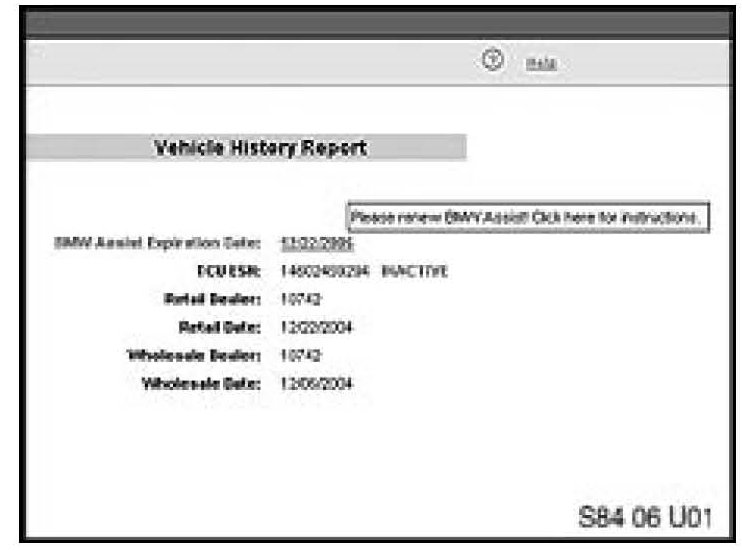

Procedure For E46, E53, E83, E85, E86 Vehicles
PROCEDURE FOR E46, E53, E83, E86 VEHICLES
1. [NEW] Check the BMW Assist account status on DCSnet. The BMW Assist services expiration date and TCU activation status can be checked on DCSnet under Service/Vehicle History Inquiry. Refer to SI B02 01 06 (Updated DCSnet Vehicle History Inquiry information of BMW Assist) for more information.
Note:
If no information is displayed on DSCnet, check the account status by calling BMW Assist.
2. [NEW] If the customer is NOT an active BMW Assist services client, no further action is required.
3. Simultaneously press the Roadside Assistance "Wrench" button and the mayday "SOS" button for greater than 8 seconds. The TCU will automatically place two calls approximately 20 seconds apart.
^ First call - "*22890" will be displayed on the radio or status line on the Board Monitor (BM). The TCU will make a connection to network provider. A verbal message will be heard that the phone is being programmed. At the end of the programming, a message should be heard that the phone was successfully programmed.
^ Second call - "*22891" will be displayed on the radio or status line on the Board Monitor (BM). The TCU will make a connection to network provider. A verbal message will be heard that the roaming capabilities are being updated. At the end of the call, a message should be heard that the roaming capabilities were successfully updated.
4. If you do not hear the message that either of the calls were successfully completed, the process must be repeated.
[NEW] Note:
If the system does not attempt to make the call or if 'BMW Assist Inactive' is displayed on the radio or BM, please refer to SI B84 24 06.
5. Switch the ignition off for 10 seconds. The new MIN and MDN will then be imported into the TCU.
6. Test the BMW Assist(TM) service for proper operation by placing a test call (press the Roadside Assistance "Wrench" button). Make sure the BMW Assist Response Center has received the correct MIN/MDN, VIN and location for the vehicle. Have the representative update their records as needed.
7. The vehicle must be located within the Verizon Wireless network for the above reactivation procedure to work properly. See the attachment to SI B84 15 03 for list of centers located outside this network. If the vehicle is not in the Verizon Wireless network perform steps one and two and then follow these additional steps.
^ Create a PuMA case to receive TCU shipping authorization.
^ Remove the TCU from the vehicle.
^ Send the TCU, BMW Assist TCU Reactivation Form with the new MIN/MDN numbers and a copy of the PuMA case via FedEx to:
BMW of North America, LLC
Attn: Body Electrical Technical Hotline (TCU Reactivation B84 14 06)
1 BMW Plaza
Montvale, NJ 07645
(201) 573-2000
^ BMW of North America, LLC will reactivate the TCU and ship it out on the same business day it was received.
^ After receiving the TCU back from BMW of North America, reinstall the TCU, and place a BMW Assist(TM) call as outlined in step 4.